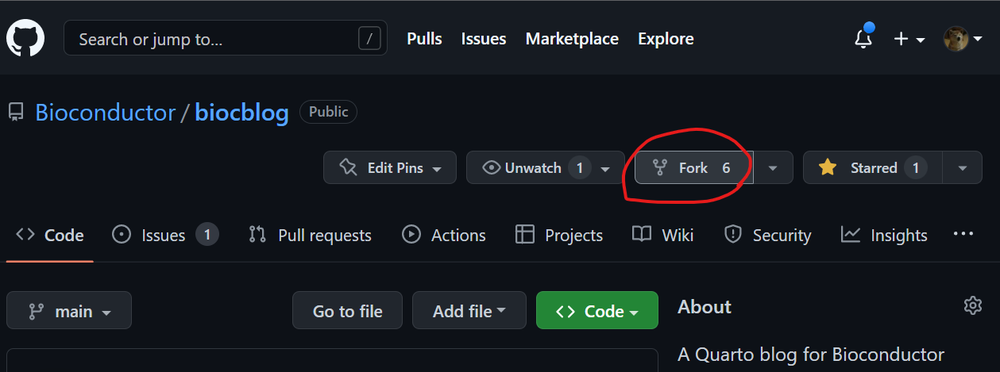
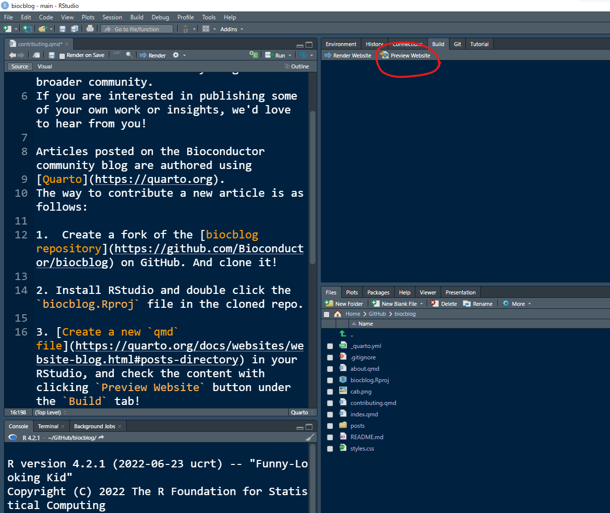

Contributing
We very much appreciate contributions to the Bioconductor community blog from the broader community. If you are interested in publishing some of your own work or insights, we’d love to hear from you!
Requirements
There are a few minimum requirements for a blog post to be considered for acceptance (adapted from SciPy).
- The main subject must relate to Bioconductor.
- Content is published under Creative Common CC-BY-4.0 License for the text and BSD 3-Clause License for any code.
- You have the right to publish any images included.
- Images must be compressed using a tool like
pngquant. - Images must contain alt text for accessibility.
- The post and authors abide by the Bioconductor Code of Conduct.
- The post must be written in English or a language we have a reviewer for. If not English, please open a GitHub issue to check we can review.
How to contribute
Articles posted on the Bioconductor community blog are authored using Quarto. The way to contribute a new article is as follows:
Create a fork of the biocblog repository on GitHub.  And Git clone it to your local environment!
Install RStudio and double click the
biocblog.Rprojfile in the cloned repo. The latest release of RStudio (v2022.07 at this point) includes support for editing and preview of Quarto documents.Create a new
qmdfile in your RStudio, and check the content with clickingPreview Websitebutton under theBuildtab! If including images:
compress the images with a tool like
pngquantpngquant --ext .png --force my_figure.pngadd Alt Text.
If including code, render the
qmdlocally and commit files changed in the_freezedirectory.When you’re done, please
git committhe rawqmdplus any static files you might have added/updated in the post’s source directory or_freezedirectory. Don’t commit any generated files, such as html.Send a Pull Request requesting that we accept your article!
Once we see your Pull Request, we’ll take a look at your article, suggest changes as necessary, then publish it when it’s ready.